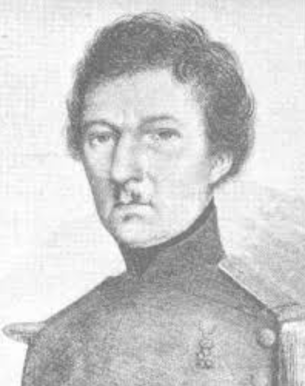
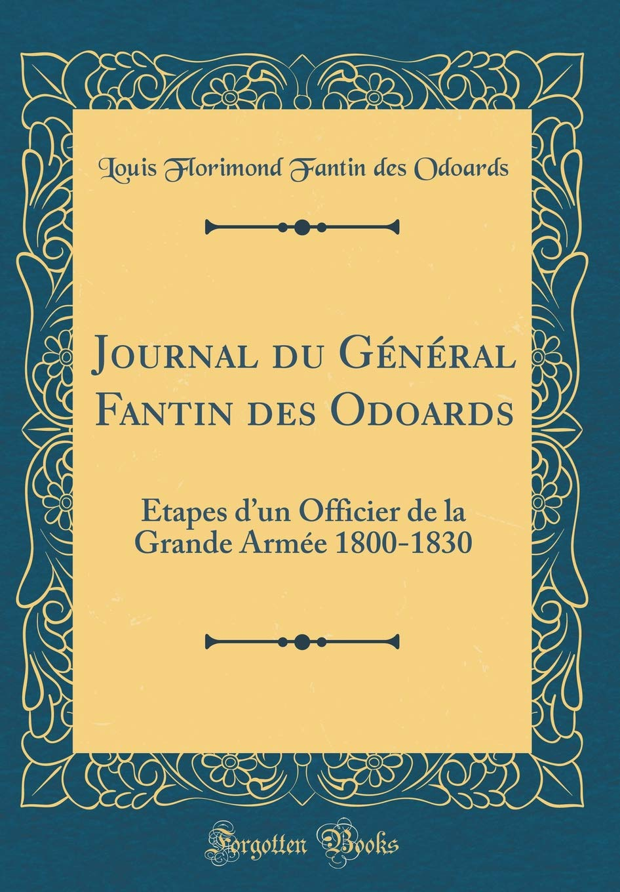
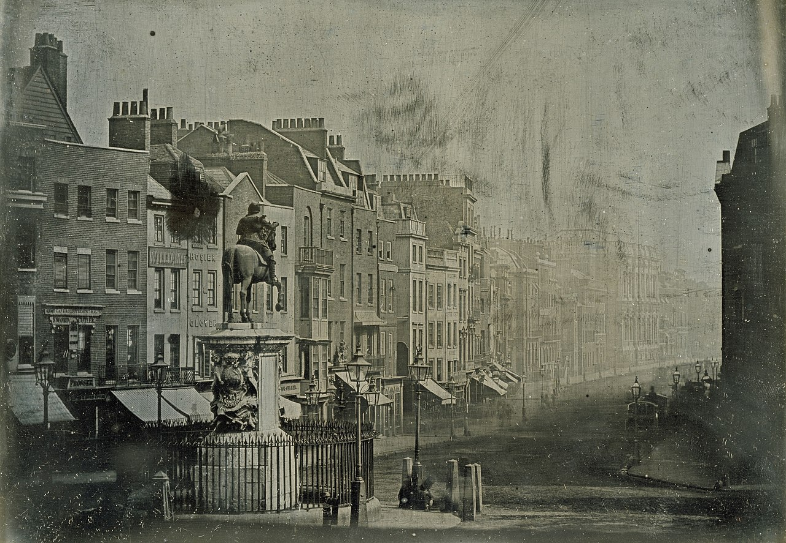
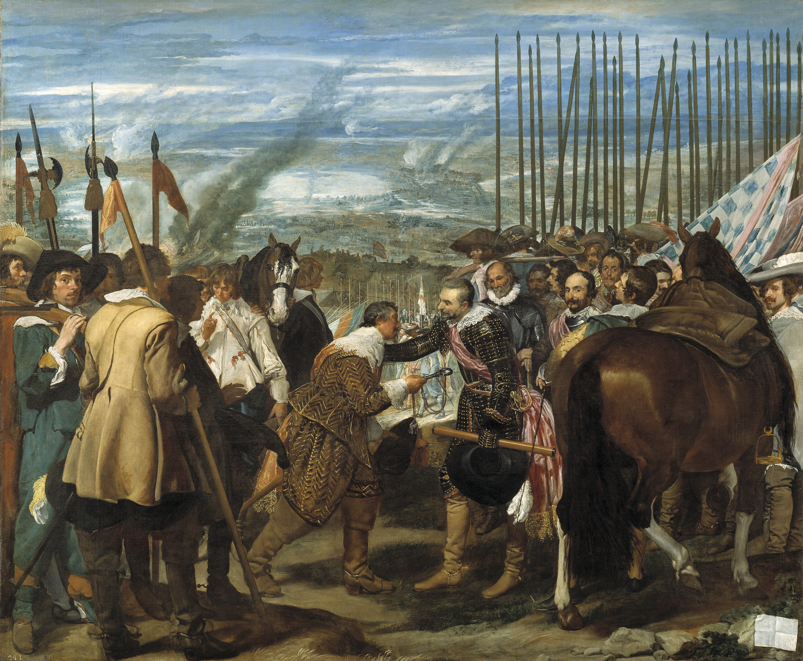
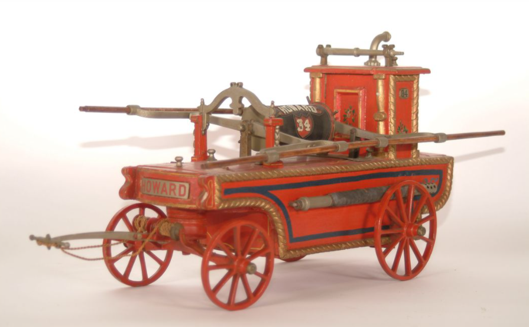

텅빈 거리의 군악대 - 나폴레옹의 모스크바 입성
게시: 2020-12-07T06:30:24+09:00
그랑다르메 본대가 모스크바를 내려다 볼 수 있는 포클로나이아(Poklonnaia) 언덕에 올라선 것은 다음날인 1812년 9월 14일 오후였습니다. 근위대 소속의 부르고뉴(Adrien Jean-Baptiste François Bourgogne) 하사의 기록에 따르면 이 언덕 정상에 오른 병사들은 모두 흥분하여 아직 고개 아래에 있는 동료들에게 "모스꾸, 모스꾸 (Moscou, 모스크바의 프랑스어 표기)"를 외쳤습니다. 그 소리에 모든 병사들은 서둘러 정상에 올라 저 멀리 모스크바를 내려다 보았습니다. 부르고뉴 하사는 이 순간, 여태까지 겪었던 모든 고난과 굶주림, 위험 등은 다 사라져버렸고, 자신을 포함한 모든 병사들은 이제 저 곳에서 편안하게 겨울을 날 생각과, 모스크바의 세련된 여인들과 사랑(?)을 나눌 생각에 들떴다고 적었습니다.

(러시아 원정 기록에 자주 언급되는 부르고뉴 하사는 당시 27세였습니다. 아우스테를리츠 전투 직후인 1806년 1월, 21세의 나이에 근위대 유격병으로 군 생활을 시작한 것을 보면 키가 아주 컸던 모양입니다. 그는 사병으로 계속 복무했고 에슬링 전투에서 2번이나 부상당하기도 했는데, 러시아 원정 직전인 1812년 4월에 부사관 계급으로 승진했습니다. 그는 러시아에서 살아돌아온 몇 안되는 행운아 중의 하나였고, 러시아 원정 패배로 장교가 부족해진 프랑스군에서 1813년 3월 소위로 임관됩니다. 그는 데사우(Dessau) 전투에서 부상을 당한 뒤 프로이센군의 포로가 되어, 그때부터 수기를 쓰기 시작했다고 합니다. 그는 훗날 아버지의 직업인 옷장사를 하다 잘 안 되어 45세의 나이에 부사관으로 재입대했는데, 나중에 결국 장교로 임관되었습니다. 그는 재입대 이후 23년간(!) 복무한 뒤 68세의 나이에 예편하여 수기를 완성했습니다. 그는 82세의 나이까지 장수했습니다. 가만 보면 베네딕트 컴버배치 약간 닮은 듯?) 이 흥분은 장교들도 마찬가지였습니다. 지난 3개월간 생각했던 것 이상의 참극을 겪었던 목표가 바로 여기였으니까요. 당시 모스크바 인구는 약 27만 명에 석조 주택이 2567채, 목조 주택이 6584채, 공장도 464개소나 있던 대도시였습니다. 당시 급격히 성장하던 유럽 최고의 도시 파리의 인구가 약 60만, 베를린 같은 경우는 20만에 불과했습니다. 역시 나중에 수기를 남긴 오두아르(Louis-Florimond Fantin des Odoards) 대위의 눈에, 모스크바는 마치 천일야화에 나오는 환상의 도시처럼 보였습니다. 밝은 색상의 지붕을 얹은 이국적인 성당과 궁전, 금도금을 한 십자가 등으로 장식된 모스크바는 프랑스군이 상상했던 것보다 휘황찬란했습니다. 병사들은 크레믈린 궁전 내의 높은 종탑 꼭대기에 달린 번쩍이는 십자가를 보고 전체가 순금으로 만들어진 것이라며 탐욕스럽게 쳐다보았지만 오두아르 대위는 은도금이 틀림없다고 보았습니다.
(크레믈린 궁의 이반 대제 종탑입니다. 아마 오두아르 대위가 감탄했던 크레믈린의 거대한 종탑이라는 것은 이걸 말하는 것 아닐까 합니다. 전설에 따르면 나폴레옹도 저 십자가가 순금이라는 이야기를 듣고 끌어내리려 했으나 아무리 노력해도 쉽게 십자가를 뜯어낼 수가 없었습니다. 그러다가 어떤 러시아 농부가 보상금을 바라고 첨탑에 기어올라가 마침내 십자가를 떼어내고 밧줄로 달아 내려보냈는데, 이 농부에게 나폴레옹은 '조국의 반역자'라며 상금 대신 총살형을 선물했다고 합니다. 아무튼 이 십자가는 도금을 한 무쇠로 만들어졌다고 하네요.)

(오두아르는 법률가 집안 출신으로서, 20세의 나이에 소위로 군 생활을 시작했습니다. 그는 이탈리아와 프로이센 등지에서 활약했고 특히 프리틀란드 전투에서 무훈을 세워 관보에 이름이 오르기도 했습니다. 러시아에 가기 전에는 포르투갈과 스페인에서 싸웠고요. 1813년 러시아에서 살아돌아온 뒤 대령이 되었는데, 나폴레옹의 백일천하 때도 나폴레옹 편에 서서 결국 군에서 예편당했습니다. 그러나 4년 만에 다시 복직했고, 특히 1823년 스페인 내란 때 다시 스페인에 가서 무훈을 세웠습니다. 그는 45세에 장군이 되었고 88세까지 장수하다 파리에서 죽었습니다. 한가지 재미있는 것은 부르고뉴 하사는 나중에 장교가 되었지만 당시의 계급대로 '부르고뉴 하사의 수기'라고 제목을 정했고, 오두아르는 '오두아르 장군의 수기'라고 제목을 정했다는 것입니다.)

(당시 파리가 유럽 제1의 도시라고 하면 아마 런던은 고개를 갸우뚱했을 것입니다. 산업혁명이 시작된 런던은 1801년 이미 인구가 190만에 달했거든요. 그러니 나폴레옹이 러시아가 아니라 영국을 최대의 적으로 지목한 것도 어떻게 보면 필연적이었습니다. 사진은 1839년 런던 트라팔가 광장의 모습입니다. 사진 기술은 1816년에 처음 발명되었다니까, 당시 폭발하기 시작한 유럽의 기술 발전 속도가 참 놀랍습니다.) 하지만 모스크바는 입성할 때부터가 실망의 연속이었습니다. 일단 나폴레옹은 자신이 성문 앞에 올 때까지도, 정복자에게 성문 열쇠를 바치는 행사를 하러 모스크바 시청 관원들이 나타나지 않는 것에 크게 놀랐습니다. 이런 상황은 전례가 없는 일이었습니다. 베를린이든 빈이든 마드리드든 모든 정복된 수도에서는 국왕이 도망가더라도 시장이나 그에 준하는 관료는 남아서 정복자에게 열쇠를 바쳤습니다. 이는 유럽에서 매우 오래된 관습이었는데, 단순히 정복자에게 예우를 갖추는 쇼우를 넘어 꼭 필요한 행사이기도 했습니다. 정복된 도시의 치안을 유지하고 지친 병사들에게 안정적으로 숙소와 식량을 제공해주려면 그 도시의 행정 관료들와 주민들이 안정적인 평소 생활을 유지하는 것이 훨씬 편리했습니다. 그래서 나폴레옹이 1805년 빈(Wien)을 점령했을 때는 심지어 약 1만 명의 빈 중산층 시민들을 무장시켜 빈 시내의 치안을 맡기기도 했습니다. 정복된 주민들과 정복한 군대 간에 그런 절차를 협의하는 자리가 바로 그렇게 열쇠 전달하는 행사였습니다.

(벨라스케즈의 명작 '브레다의 항복'입니다. 여기서 패장인 네덜란드 나사우의 유스틴이 도시의 열쇠를 승자인 스페인의 알바 공작에게 바치고 있습니다. 맨 왼쪽에서 화승총을 어깨에 걸친 채 우리를 쳐다보고 있는 사람은 벨라스케즈 본인의 자화상 아닌가 싶은데, 혹시 아시는 분 댓글 부탁요.) 도시를 정복했을 때 이렇게 열쇠 전달이 없는 경우도 물론 있었습니다. 그러나 그런 경우란 무장 도시에서 농성을 하다 공격군이 강습으로 도시를 함락시킨 경우였습니다. 그런 경우엔 피에 미쳐 날뛰는 병사들을 통제할 방법이 마땅치 않아서 하루 정도 민간인에 대한 약탈을 허용하는 것이 불문률이었습니다. 하지만 그런 일이 벌어지면 점령군에게도 좋지 않았습니다. 흥분한 병사들이 불필요한 파괴와 방화, 살인을 저지르기 때문에 결국 점령군이 요긴하게 쓸 주택과 가구, 의류 등이 다 망가지는데다, 식량, 특히 술이 불필요하게 낭비되고 훼손되기 일쑤였기 때문입니다. 무엇보다, 질서있게 입성하면 사령관의 금고로 고스란히 들어올 귀중품과 현금 등이 이 틈을 틈타 한몫 벌어보려는 병사들의 배낭 속으로 사라지는 것을 막을 수가 없었습니다. 일이 이렇게 되다보니 아쉬운 사람이 우물을 판다고, 모양 빠지게도 나폴레옹은 시내로 들어가지 않고 참모들 몇 명을 시내로 먼저 들여보내 누군가 점령 절차를 협의할 러시아 관료를 찾아오도록 했습니다. 그러나 아무리 기다려도, 참모들은 그나마 좀 술에 취하지 않은 점잖아 보이는 사람들을 데리고 왔을 뿐이었고, 결국 누가 봐도 그럴싸 해보이는 관료나 귀족을 찾아오지 못했습니다. 나폴레옹은 기가 막혔고, 놀랐고, 분노했습니다. "아니 이 야만인들이 이 모든 것을 그냥 다 포기하고 가버렸단 말인가?" 나폴레옹은 주 러시아 대사를 지내며 모스크바를 잘 아는 콜랭쿠르를 돌아보며 이에 대해서 어떻게 생각하냐고 물었습니다. 애초부터 러시아 침공에 반대했던 콜랭쿠르는 그냥 "제가 무슨 생각을 하는지는 이미 폐하께서도 잘 알고 계십니다." 라고만 대답했습니다. 결국 나폴레옹은 그날 모스크바에 입성하지 못했습니다. 나폴레옹은 자존심 때문에 못 들어갔지만, 물론 프랑스군 선발대는 이미 모스크바에 입성했습니다. 시내에는 아직도 피난을 가는 시민들이 거리를 메우고 있었는데, 그 북새통 속에는 아직 철수하지 못한 러시아군이 일부 뒤섞여 있었지만 프랑스군을 보고도 싸움을 걸어오지는 않았습니다. 오히려 먼저 무기고를 털어 머스켓 소총으로 무장한 뒤 크레믈린 궁을 약탈하고 있던 러시아 부랑자들이 '우리가 먼저 왔다 이 놈들아'라며 프랑스군에게 발포했고, 이들은 프랑스군이 대포를 쏘자 황급히 달아났습니다. 그날 하루는 그렇게 혼란 속에 날이 저물었습니다. 다음날 아침 6시, 더 기다릴 수 없었던 나폴레옹은 화려한 정복을 입은 근위대를 앞세우고 모스크바에 입성했습니다. 아직 상황 파악이 안되었던 병사들은 잔뜩 들떠 있었으나 군악대를 앞세우고 보무도 당당히 거리를 행진하던 병사들은 모스크바 시민들이 아무도 나와서 구경을 하지 않자 크게 실망했습니다. 부르고뉴 하사는 여자들이 거리에 보이지 않는다는 점을 몹시 실망스러워 했고, 오두아르 대위는 썰렁한 거리의 적막함 때문에 승리의 기쁨이 미래에 대한 불안감으로 바뀌었다고 적었습니다. 모스크바 시민들이 다 피난을 간 것은 아니었습니다. 대략 1/3 정도, 그러니까 7~8만 정도의 시민들이 남아있었으나, 이들은 모두 상점을 닫아걸고 집에 숨어있었습니다. 그랑다르메의 병사들도 적어도 처음에는 점잖게 행동했습니다. 행진이 끝난 이들은 무엇보다 배가 고팠으므로 여기저기의 가게로 몰려가 먹을 것을 사려고 했습니다. 가게와 식당들이 다 문을 닫았으므로, 이들은 민간 주택의 문을 두들기며 먹을 것을 사려고 했고, 돈이 없었던 이들은 구걸을 했습니다. 그러나 많은 가옥은 버려진 상태였습니다. 배가 고픈 병사들은 곧 빈 집에 함부로 들어가 먹을 것을 뒤지기 시작했고, 먹을 것 뿐만 아니라 의류와 식기, 귀중품 등도 배낭에 챙기기 시작했습니다. 곧 여기저기서 소규모의 약탈이 벌어졌고, 남아 있는 주민들에 대한 폭행이 일어나기도 했습니다. 그러나 아직까지는 상황이 통제되는 분위기였습니다. 무엇보다, 모스크바 시내의 창고에는 많은 양의 곡물이 그대로 남아있었습니다. 다만 말을 위한 건초가 매우 부족했는데, 다행인지 불행인지 프랑스군에게는 기병대가 별로 남아있지 않았습니다. 나폴레옹은 모르티에(Mortier) 원수를 모스크바 주지사로 임명하고 절대 약탈이 일어나지 않도록 조치하라고 엄명을 내렸습니다. 그러나 그러기 위해서는 지치고 배고픈 병사들에게 숙사를 배정해줘야 했는데, 그걸 해줄 시의 관료들이 다 도망가버린 뒤라서, 결국 프랑스군 스스로 알아서 숙소를 정해야 했습니다. 물론 장군들과 장교들은 궁전과 저택, 중산층의 번듯한 주택을 골랐고, 병사들은 서민들의 주택이나 마굿간 등을 차지해야 했습니다. 베르티에의 부하였던 소우틱(Roman Soltyk)의 기록을 보면, 베르티에의 참모진들은 무신-푸쉬킨(Musin-Pushkin) 공작부인의 저택을 골랐는데, 가보니 공작부인은 피난을 떠났지만 실크 스타킹을 신은 우아한 급사가 이들을 맞이하며 공작부인께서 프랑스군 장교들을 잘 접대하라고 당부하셨다는 말을 전했습니다. 공작부인은 뿐만 아니라 프랑스 출신 가정교사와 말동무 여성(dame de compagnie)를 남겨 이 숙녀들이 식사 때 프랑스 장교들을 맞이하도록 했습니다. 하지만 이런 분위기는 곧 바뀌게 됩니다. 당시 모스크바를 비롯한 대부분의 유럽 도시에는 소방용 펌프 마차가 여러대 준비되어 있었습니다. 프랑스군은 아직 아무도 눈치채지 못하고 있었지만, 희한하게도 9월 14일 밤, 모스크바 시내에는 소방 펌프가 하나도 남아 있지 않았습니다.

(이건 19세기 초반 런던에서 사용되던 소방 펌프 마차입니다.) Source : 1812 Napoleon's Fatal March on Moscow by Adam Zamoyski
fr.wikipedia.org/wiki/Adrien_Bourgogne
fr.wikipedia.org/wiki/Louis-Florimond_Fantin_des_Odoards
en.wikipedia.org/wiki/19th-century_London